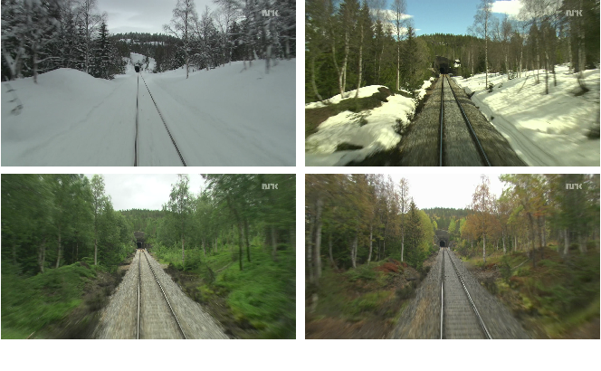
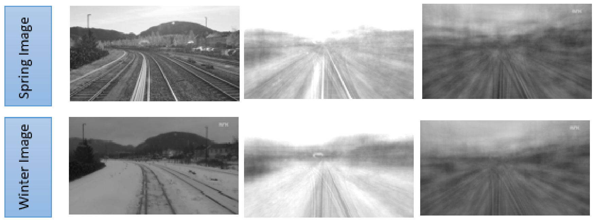
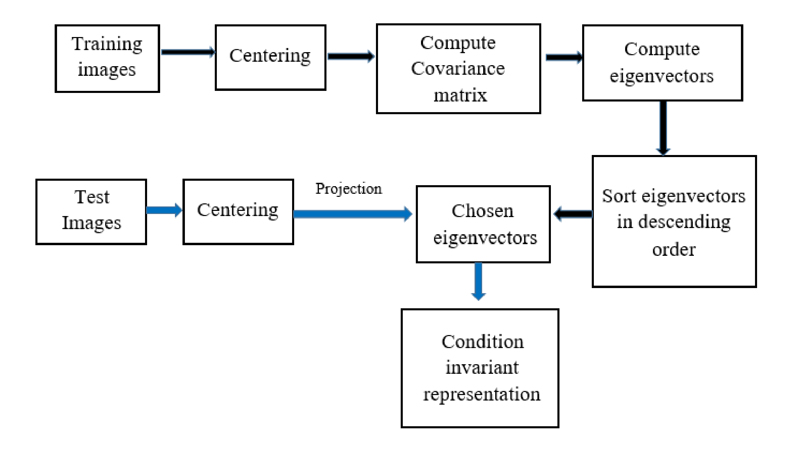

Learning Condition-invariant Scene Representation using UNsupervised Algorithm
The appearance of a single place can look extremely different in different seasons as demonstrated in Figure 1. Hence it is a very challenging task to recognize the same place under different conditions, e.g., in different seasons.

Figure 1: The four images show the same place in four different seasons; winter, spring, summer, fall (from upper-left to the bottom-left in clockwise direction)
. These images are taken from the nordland dataset,
they illustrate the immense variations in the appearance of a scene in different seasons. Such changes in the appearance
raise a severe challenge for an autonomous navigation system.
This work is motivated from Supervised and Unsupervised Linear Learning Techniques for Visual Place Recognition in Changing Environments(IEEE Transactions on Robotics 32 (2016)). Their work showed that the PCA can be used to retrieve the robust representations of the scenes by directly applying the PCA to the intensity images. The idea of this algorithm is demonstrated in Figure 2.

Figure 2: First column: Two images from same locations of the two different seasons [Nordland dataset].
Second column: Images are projected on first 100 principal components (PC's)
Third column: Images are projected on second 100 principal components (PC's)
It shows that the condition dependent features of the scenes are associated with the first few principal components.
So, by discarding the first few principal components and by choosing the subsequent principal components, the condition
independent or condition-invariant features can be learned.Second column: Images are projected on first 100 principal components (PC's)
Third column: Images are projected on second 100 principal components (PC's)

Figure 3: Workflow of the PCA approach. Blue arrows show the workflow of the test data.
Algorithm is evaluated using the precision-recall curves and the fraction of correct matches. The correct matches are the True Positives (TP), the incorrect matches are the False Positives (FP) and when an algorithm mistakenly discards a correct match, that is labeled as the false negative (FN) match. Since every scene in this dataset has a ground truth match, so there is no true negative (TN), every negative is a false negative (FN).
Precision is defined as the proportion of correct matches to the total number of matches, i.e., correct and incorrect matches. It implies the confidence of the predicted result of an algorithm.
Recall is defined as the proportion of the correct matches to the total number of actual matches. The definition of the precision and recall are given below. \begin{equation} Precision=\frac{TP}{TP+FP} \label{equation_precision} \end{equation} \begin{equation} Recall=\frac{TP}{TP+FN} \label{equation_recall} \end{equation}
High precision refers to the low false positive rate and high recall refers to the low false negative rate.
The precision--recall curves are very useful evaluation measure in the place recognition model (in SLAM we call it In a loop-closure detection model), it is essential to avoid the false positives, because it means two images have been identified as a same place, i.e., it is a loop detection, but in reality, they are from two different locations. This false prediction leads the algorithm to produce the inconsistent map of its surroundings. As the name suggests, the precision--recall curve is a plot of the precision (in $y-axis)$ and recall (in $x-axis$) for the different pairs of the precision and recall values. An ideal error-free model would be the one that reaches $100\%$ precision at $100\%$ recall. The precision--recall curves are generated by varying the number of retrieved or matched images ranging from $1$ to the total number of the test images.
One more evaluation metric has been used, that is the fraction of correct matches. It is defined as the percentage of the number of times the best match the correct loop. $$\text{Fraction of correct matches}=\frac{\text{Number of correct predicted scenes}} {\text{Number of total evaluated scenes}} \times 100 \%$$